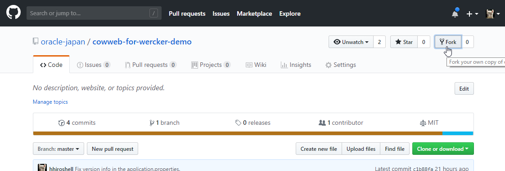
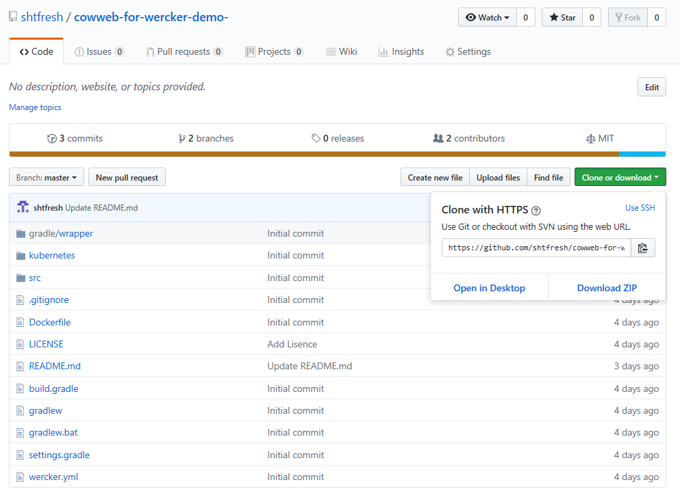
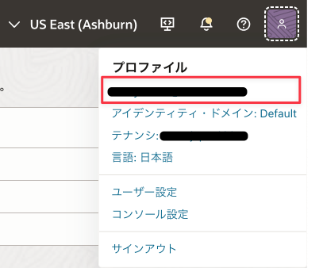
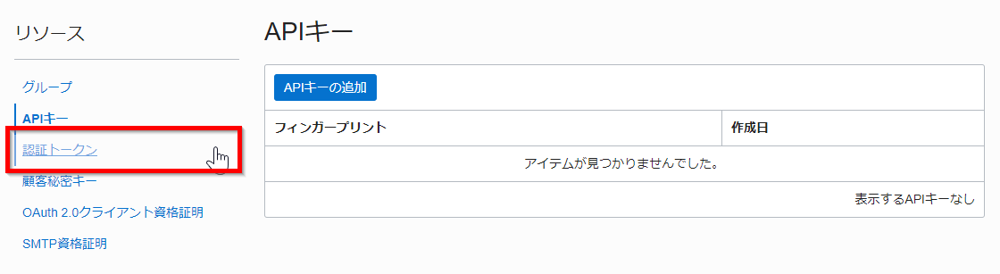
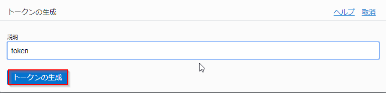
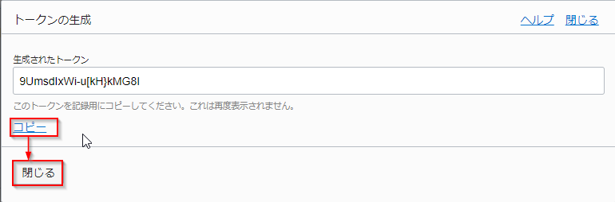
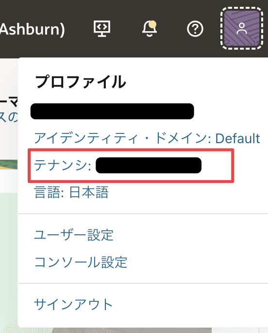
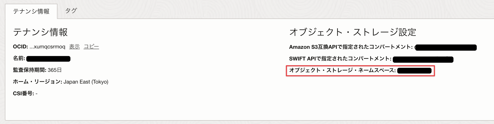
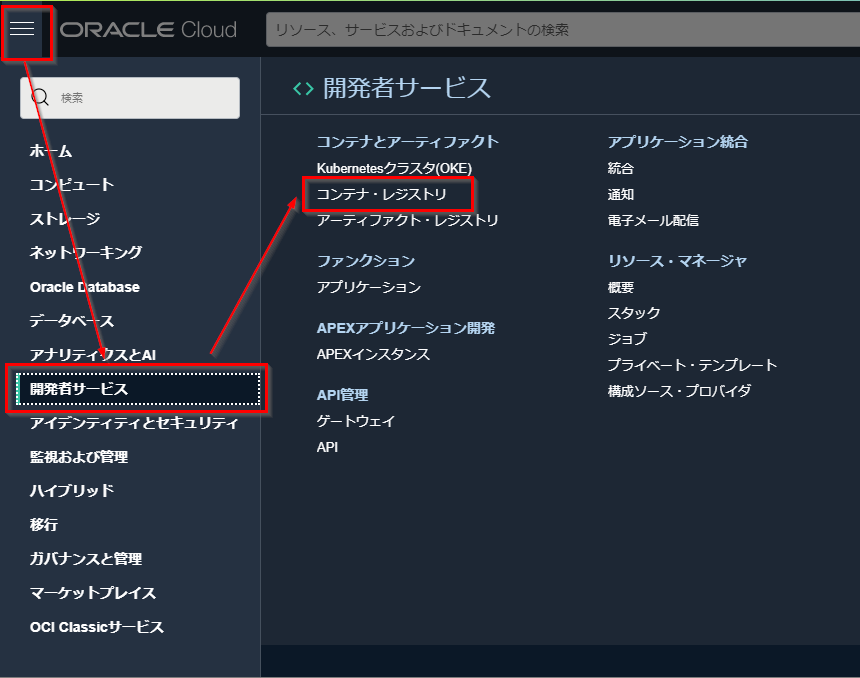

Oracle Container Engine for Kubernetes（以下OKE）は、OracleのマネージドKubernetesサービスです。
このハンズオンでは、OKEにサンプルアプリケーションをデプロイするプロセスを通して、Kubernetesそのものの基本的な操作方法や特徴を学ぶことができます。
このカテゴリには以下のサービスが含まれます。
-
- Oracle Container Engine for Kubernetes (OKE):
- フルマネージドなKuberentesクラスターを提供するクラウドサービスです。
-
- Oracle Cloud Infrastructure Registry (OCIR):
- フルマネージドなDocker v2標準対応のコンテナレジストリを提供するサービスです。
前提条件
- クラウド環境
- Oracle Cloudのアカウントを取得済みであること
- OKEハンズオン事前準備を実施済みであること
1.コンテナイメージの作成
ここでは、サンプルアプリケーションが動作するコンテナイメージを作成します。
1.1. アプリーケーションのリポジトリをForkする
GitHubにアクセスし、ご自身のアカウントでログインしてください（GitHubのアカウントがなければ、事前に作成してください)。

今回利用するサンプルアプリケーションは、oracle-japanのGitHubアカウント配下のリポジトリとして作成してあります。
サンプルアプリケーションのリポジトリにアクセスしたら、画面右上のforkボタンをクリックしてください。

これ以降の作業では、Forkして作成されたリポジトリを利用して手順を進めて行きます。
1.2. ソースコードをCloneする
1.1. で作成したリポジトリにアクセスして、Clone or downloadボタンをクリックします。
ソースコードを取得する方法は2つあります。一つはgitのクライアントでCloneする方法、もう一つはZIPファイル形式でダウンロードする方法です。ここでは前者の手順を行いますので、展開した吹き出し型のダイアログで、URLの文字列の右側にあるクリップボード型のアイコンをクリックします。
これにより、クリップボードにURLがコピーされます。

Cloud ShellまたはLinuxのコンソールから、以下のコマンドを実行してソースコードをCloneします。
git clone [コピーしたリポジトリのURL]
続いて、Cloneしてできたディレクトリをカレントディレクトリにしておきます。
cd cowweb-for-wercker-demo
1.3. コンテナイメージを作る
コンテナイメージは、Dockerfileと呼ばれるコンテナの構成を記述したファイルによって、その内容が定義されます。
サンプルアプリケーションのコードには作成済みのDockerfileが含まれていますので、その内容を確認してみます。以下のコマンドを実行してください。
cat Dockerfile
FROM gradle:jdk8-alpine as builder
COPY --chown=gradle:gradle ./build.gradle /home/gradle/
COPY --chown=gradle:gradle ./settings.gradle /home/gradle/
COPY --chown=gradle:gradle ./src /home/gradle/src
RUN gradle build -Pbuilddir=build
FROM java:8-jre-alpine
RUN addgroup -S -g 1000 app \
&& adduser -D -S -G app -u 1000 -s /bin/ash app
USER app
WORKDIR /home/app
COPY --from=builder --chown=app:app /home/gradle/build/libs/cowweb-1.0.jar .
CMD ["java", "-jar", "/home/app/cowweb-1.0.jar"]
Dockerfileの内容を見ると、FROMで始まる行が2つあることがわかります。最初のFROMから始まる数行は、jdk8がインストールされたコンテナイメージ内にサンプルアプリケーションのコードをコピーし、さらにgradle buildを実行してアプリをビルドしています。
次のFROMから続く一連の処理は、jreがインストールされたイメージを基に、アプリの実行ユーザーの作成、ビルドしてできたjarファイルのコピー、コンテナ起動時に実行するコマンドの設定などを行っています。
それではこのDockerfileを使ってコンテナイメージを作成します。以下のコマンドを実行してください。
docker build -t [リポジトリ名]/cowweb:v1.0 .
このコマンドにおいてリポジトリ名には任意の文字列を指定できますが、通常はプロジェクト名やユーザー名などを小文字にしたものを指定します。例えば、以下のようなコマンドになります。
docker build -t handson-001/cowweb:v1.0 .
以下のように、Successfully taggedのメッセージで処理が終了していれば、イメージのビルドは完了です。
Step 1/11 : FROM gradle:jdk8-alpine as builder
jdk8-alpine: Pulling from library/gradle
4fe2ade4980c: Pull complete
6fc58a8d4ae4: Pull complete
fe815adf554b: Pull complete
56691be5f8bb: Pull complete
e7261ab32035: Pull complete
Digest: sha256:478f17890f1ac719c37d9e1aa20d22b9cc45ae5b8ae0604f32cf1437a1cdfcca
Status: Downloaded newer image for gradle:jdk8-alpine
---> 45b2b256d130
Step 2/11 : COPY --chown=gradle:gradle ./build.gradle /home/gradle/
---> 4c633cdbbb40
...（中略）...
Step 10/11 : COPY --from=builder --chown=app:app /home/gradle/build/libs/cowweb-0.1.jar .
---> fc5c4137a0e7
Step 11/11 : CMD ["java", "-jar", "/home/app/cowweb-1.0.jar"]
---> Running in aed12b404339
Removing intermediate container aed12b404339
---> fe2f2527b8d4
Successfully built fe2f2527b8d4
Successfully tagged handson-001/cowweb:v1.0
実際にビルドされたイメージは、docker image lsコマンドで確認することができます。
docker image ls
REPOSITORY TAG IMAGE ID CREATED SIZE
handson-001/cowweb v1.0 fe2f2527b8d4 2 minutes ago 128MB
<none> <none> 088473d4c42c 2 minutes ago 212MB
gradle jdk8-alpine 45b2b256d130 3 weeks ago 191MB
hello-world latest 4ab4c602aa5e 5 weeks ago 1.84kB
java 8-jre-alpine fdc893b19a14 19 months ago 108MB
handson-001/cowwebの名前のイメージが作成されていることがわかります。
アプリケーションのコンテナイメージは、ソースコードのビルドにはJDK8がインストールされたコンテナを利用し、アプリケーションの実行環境にはJREがインストールされたコンテナを利用しています。このため、jdkやjreといった名前のついたイメージも表示されます。
これらのコンテナは、アプリケーションのコンテナイメージの作成時に、自動的にダウンロードされて利用されています。
2.OCIRへのプッシュとOKEへのデプロイ
2.1. OCIRを利用するための事前準備
OCIRはOracleが提供するコンテナレジストリのマネージドサービスです。ここでは、1.3.で作成したコンテナイメージをOCIRにプッシュ（アップロード）します。
OCIRにdockerコマンドからアクセスするため、OCIのユーザーアカウントに必要な設定をしていきます。
OCIコンソール画面右上の人型のアイコンをクリックし、展開したプロファイルからユーザ名(oracleidentitycloudservice/<ユーザ名>)をクリックします。

下にスクロールした左側にある認証トークンをクリックして、トークンの作成画面に遷移します。

トークンの生成ボタンをクリックします。

[Geterate Token]ダイアログで、トークンの用途を説明する情報（任意の文字列）を入力し、トークンの生成ボタンをクリックします。

ダイアログに生成したトークンが表示されます。Copyという文字列をクリックするとクリップボードにこのトークンがコピーされます。そして閉じるをクリックします。

このトークンはあとの手順で利用するため、テキストエディタ等にペーストするなどして控えておいてください。
2.2. OCIRにコンテナイメージをプッシュする
それでは、コンテナイメージをOCIRにプッシュします。
まず、docker loginコマンドでOCIRにログインします。ログイン先のレジストリを指定するにあたり、ホストされているデータセンターリージョンに合わせて適切なリージョンコードを指定する必要があります。
ご自身の環境に合わせて、下表から適切なリージョンコードを見つけてください。
| リージョン | リージョンコード |
|---|---|
| ap-tokyo-1 | nrt |
| ap-osaka-1 | kix |
| ap-melbourne-1 | mel |
| us-ashburn-1 | iad |
| us-phoenix-1 | phx |
| ap-mumbai-1 | bom |
| ap-seoul-1 | icn |
| ap-sydney-1 | syd |
| ca-toronto-1 | yyz |
| ca-montreal-1 | yul |
| eu-frankfurt-1 | fra |
| eu-zurich-1 | zrh |
| sa-saopaulo-1 | gru |
| uk-london-1 | lhr |
| sa-santiago-1 | scl |
| ap-hyderabad-1 | hyd |
| eu-amsterdam-1 | ams |
| me-jeddah-1 | jed |
| ap-chuncheon-1 | yny |
| me-dubai-1 | dxb |
| uk-cardiff-1 | cwl |
| us-sanjose-1 | sjc |
次に、OCIRにログインするためにオブジェクト・ストレージ・ネームスペースを確認します。
オブジェクト・ストレージ・ネームスペースは、OCIコンソール画面右上の人型のアイコンをクリックし、展開したプロファイルからテナンシ:<テナンシ名>から確認します。

テナンシ情報のオブジェクト・ストレージ設定からオブジェクト・ストレージ・ネームスペースの値を確認します。OCIRへのアクセスする際に使用するため、値をテキストファイルにコピー＆ペーストするなどして控えておいてください。

オブジェクト・ストレージ・ネームスペースについて
オブジェクト・ストレージ・ネームスペースはテナントに対し1つ割り当てられます。リージョン内のすべてのコンパートメントにまたがり使用されます。任意の文字列が設定され、変更することはできません。
次に、以下のコマンドでOCIRにログインします。
docker login [リージョンコード].ocir.io
例えば、東京リージョン(nrt)をご利用の場合は、以下のコマンドでログインします。
docker login nrt.ocir.io
ユーザー名、パスワードの入力を求めるメッセージが表示されますので、以下のように入力してください。
- ユーザー名: [オブジェクト・ストレージ・ネームスペース]/[ユーザー名] （例: nrzftilbveen/oracleidentitycloudservice/yoi.naka.0106@gmail.com）
- パスワード: [2.1.で作成したトークン文字列]
パスワードについて
ここで入力するパスワードはOCIコンソールにログインする際のパスワードとは異なるのでご注意ください
以下のようにLogin Succeededというメッセージが表示されれば、ログイン成功です。
Username: nrzftilbveen/Handson-001
Password:
Login Succeeded
続いて、OCIRの形式に合わせてコンテナイメージのタグを更新します。docker tagコマンドを実行してくさい。
docker tag [リポジトリ名]/cowweb:v1.0 [リージョンコード].ocir.io/オブジェクト・ストレージ・ネームスペース]/[リポジトリ名]/cowweb:v1.0
[リージョンコード]と[オブジェクト・ストレージ・ネームスペース]は、これまでの手順で指定したものと同じものを指定します。リポジトリ名にはdocker buildのときにしてしたものと同じ文字列を指定してください。
例えば、以下のように指定します。
docker tag handson-001/cowweb:v1.0 nrt.ocir.io/nrzftilbveen/handson-001/cowweb:v1.0
この操作によって、コンテナイメージにプッシュ先のレジストリを指定する情報を追加しています。これを行わない場合、コンテナイメージはデフォルトのレジストリが指定されたものとみなされ、Docker社が提供するDocker Hubというレジストリが利用されてしまいます。
これで準備が整いましたので、実際にOCIRにイメージをプッシュします。以下のコマンドを実行してください。
docker push [リージョンコード].ocir.io/[オブジェクト・ストレージ・ネームスペース]/[リポジトリ名]/cowweb:v1.0
例えば、以下のように指定します。
docker push nrt.ocir.io/nrzftilbveen/handson-001/cowweb:v1.0
以下のような実行結果となれば、プッシュが成功しています。
The push refers to repository [nrt.ocir.io/nrzftilbveen/handson-001/cowweb]
d07a2053e8fb: Pushed
93ed7a751af8: Pushed
20dd87a4c2ab: Pushed
78075328e0da: Pushed
9f8566ee5135: Pushed
v1.0: digest: sha256:5769c194f3861f71c9fd43eb763813676aaba0b41acf453fb6a09a1af7525c82 size: 1367
docker push時の挙動
集合ハンズオンなどで、コンテナレジストリを複数のユーザーで共有している場合、以下のようなメッセージとなることがあります。
60dc38cb0cd5: Layer already exists
ea75a4331573: Layer already exists
20dd87a4c2ab: Layer already exists
…
これは既にレジストリに存在するものと同じ内容をアップロードしたときに表示されるものですので、手順をそのまま続行して問題ありません。
それでは、OCIRにコンテナが保存されていることを確認してみましょう。OCIコンソールの画面で左上のメニューを展開し、開発者サービス－コンテナ・レジストリをクリックします。

リポジトリの一覧が表示されます。この中に、指定した名前のコンテナがあることを確認してください。
そして、画面右上にあるアクションメニューを開き、パブリックに変更をクリックします。

これでレジストリへのコンテナイメージの格納は完了しましたが、デフォルトでは、イメージを取得するためにPush時と同じ認証情報が必要な状態です。Kubernetesでの利用を簡単にするために、リポジトリをPublicに変更して、認証なしでイメージの取得が行えるように設定しておきます。
以上で、OCIRへのコンテナイメージの格納は完了です。
2.3. OKEへのデプロイ
それでは、いよいよOKEクラスターにアプリケーションのコンテナをデプロイします。
OKEを始めとして、Kubernetesのクラスターにコンテナをデプロイするには、クラスター上の配置情報をmanifestと呼ばれるファイルに記述しておく必要があります。
サンプルアプリケーションのコードには作成済みのmanifestファイルが含まれていますので、その内容を確認してみます。以下のコマンドを実行してください。
cat ./kubernetes/cowweb.yaml
#!yaml hl_lines="22"
apiVersion: apps/v1
kind: Deployment
metadata:
name: cowweb
spec:
replicas: 2
selector:
matchLabels:
app: cowweb
strategy:
type: RollingUpdate
rollingUpdate:
maxUnavailable: 0
maxSurge: 1
template:
metadata:
labels:
app: cowweb
spec:
containers:
- name: cowweb
image: ${region-code}.ocir.io/${tenancy-name}/${repository}/cowweb:v1.0
ports:
- name: api
containerPort: 8080
...（以下略）...
このファイルによって、サンプルアプリケーションのコンテナが、クラスター上にどのように配置されるかが定義されています。例えば、6行目にあるreplicas:2という記述は、このコンテナが、2つ立ち上げられて冗長構成を取るということを意味しています。
サンプルアプリについて
実際にKubernetes上でコンテナが動作する際には、Podと言われる管理単位に内包される形で実行されます。上記のmanifestでは、サンプルアプリのコンテナを内包するPodが、2つデプロイされることになります。
22行目には、実際にクラスター上で動かすコンテナイメージが指定されています。現在の記述内容は、ご自身環境に合わせた記述にはなっていませんので、この部分を正しい値に修正してください。具体的には、2.2.でdocker pushコマンドを実行する際に指定した文字列と同じ内容に修正してください。
[リージョンコード].ocir.io/[オブジェクト・ストレージ・ネームスペース]/[リポジトリ名]/cowweb:v1.0
例えば、以下のような文字列となります。
nrt.ocir.io/nrzftilbveen/handson-001/cowweb:v1.0
ファイルの修正が完了したら、修正内容をリポジトリに反映しておきます。以下のコマンドを順次実行してください。
git add .
git commit -m "Update the image tag."
git push
git commit時の警告
以下のようなメッセージが表示されることがあります。
*** Please tell me who you are.
Run
git config --global user.email "you@example.com"
git config --global user.name "Your Name"
…(以下略)
このような場合は、メッセージの指示に従って2つのgit configコマンドを実行するようにしてください。普段Gitクライアントお使いの際のname, emailがあればそれで問題ありませんが、実在しない情報を入力しても手順を進めることは可能です。
git pushを実行するとGitHubのユーザー名とパスワードの入力を求められます。ここでは、お持ちのGitHubアカウントの情報を入力してください。
次に、cowweb-service.yamlというmanifestファイルの内容を確認してみます。
cat kubernetes/cowweb-service.yaml
#!yaml hl_lines="12"
apiVersion: v1
kind: Service
metadata:
name: cowweb
spec:
ports:
- name: http
port: 80
targetPort: 8080
selector:
app: cowweb
type: LoadBalancer
このmanifestファイルは、クラスターに対するリクエストのトラフィックを受け付ける際のルールを定義しています。type: LoadBalancerという記述は、クラスターがホストされているクラウドサービスのロードバランサーを自動プロビジョニングし、そのLBに来たトラフィックをコンテナに届けるという意味です。
それでは、Kubernetes上でサンプルアプリケーションのコンテナを動かしてみます。まずは、クラスターを区画に分けて管理するための領域である、namespaceを作成します。以下のコマンドで、namespace名は任意の文字列を指定できます。
今回は”handson”というnamespace名で作成します。
kubectl create namespace handson
デフォルトのNamespaceを上記で作成したものに変更しておきます。これを行うと、以降、kubectlの実行の度にNamespaceを指定する必要がなくなります。
kubectl config set-context $(kubectl config current-context) --namespace=handson
次に、manifestファイルをクラスターに適用し、PodやServiceをクラスター内に作成します。
kubectl apply -f ./kubernetes/cowweb.yaml
kubectl apply -f ./kubernetes/cowweb-service.yaml
以下のコマンドを実行して、リソースの構成が完了しているかどうかを確認することができます。
kubectl get pod,service
すべてのPodのSTATUSがRunnigであることと、cowwebという名前のServiceがあることが確認できれば、リソースの作成は完了です（ServiceのEXTERNAL-IPは、ロードバランサーが実際に作成されるまで表示されません。その場合は少し時間を置いて上記コマンドを再実行してください）。
NAME READY STATUS RESTARTS AGE
pod/cowweb-695c65b665-sgcdk 1/1 Running 0 17s
pod/cowweb-695c65b665-vh825 1/1 Running 0 17s
NAME TYPE CLUSTER-IP EXTERNAL-IP PORT(S) AGE
service/cowweb LoadBalancer 10.96.229.191 130.61.97.82 80:30975/TCP 1m
集合ハンズオン時のロードバランサーのシェイプについて
集合ハンズオンなどで、一つのクラウド環境を複数のユーザーで共有している場合、利用可能なロードバランサー数の上限に達して正常にServiceが作成できない場合があります。
そのような場合は、ロードバランサーのシェイプ（対応可能なトラフィック量）を変更して、サービスの作成を行ってみてください。
具体的には以下のコマンドを実行します。
# 作ってしまったServiceを削除
kubectl delete -f ./kubernetes/cowweb-service.yaml
# シェイプの異なるServiceを作成
kubectl apply -f ./kubernetes/cowweb-service-oci400m.yaml
これは既にレジストリに存在するものと同じ内容をアップロードしたときに表示されるものですので、手順をそのまま続行して問題ありません。
サンプルアプリについて
実際にKubernetes上でコンテナが動作する際には、Podと言われる管理単位に内包される形で実行されます。上記のmanifestでは、サンプルアプリのコンテナを内包するPodが、2つデプロイされることになります。
上の例では、IPアドレス130.61.97.82の80番ポートでロードバランサーが公開されておりここにリクエストを送信すると、アプリケーションにアクセスできることを意味しています。このIPアドレスをテキストエディタ等に控えておいてください。
これでクラスターへのデプロイは完了しましたので、実際に動作確認してみます。以下のコマンドを実行してください。
curl "http://[ロードバランサーのIP]/cowsay/say"
ローカルで動作確認したときと同様、以下のようなアスキーアートが表示されれば、アプリケーションが正常に動作しています。
______
< Moo! >
------
\ ^__^
\ (oo)\_______
(__)\ )\/\
||--WWW |
|| ||
おめでとうございます。これで、OKEクラスターで実際にアプリケーションを動かすことができました！
3.Kubernetes上のオブジェクトの確認
ここからは、先ほどデプロイしたサンプルアプリケーションを利用してKubernetes上のオブジェクトを確認しながら、Kubernetesの基本的な特徴をみていきます。
まずは、Depoymentからです。
3.1. Deploymentオブジェクトの確認
Deploymentは、Podのレプリカ数（冗長構成でのPodの数）や、Podが内包するコンテナの指定など、動作させたいコンテナに関連する構成情報を定義するオブジェクトです。
ここまでの手順で、Deploymentオブジェクトをクラスター上に作成済みであり、その事によって、サンプルアプリケーションがクラスタで動作しています。
では、Deploymentオブジェクトの情報を確認してみましょう。クラスターに存在するDeploymentの一覧を取得するには以下のコマンドを実行します。
kubectl get deployments
NAME DESIRED CURRENT UP-TO-DATE AVAILABLE AGE
cowweb 2 2 2 2 20m
先に作成したcowwebという名前のDeploymentがあることがわかります。DESISRED, CURRENTなどの値が2となっているのは、2つのPodを動かすように指定しており、その指定通りにPodが可動していることを表しています。
このDeploymentの情報をもっと詳しく調べるには、以下のコマンドを実行します。
kubectl describe deployments/cowweb
Name: cowweb
Namespace: handson-030
CreationTimestamp: Thu, 31 Jan 2019 17:34:44 +0000
Labels: <none>
Annotations: deployment.kubernetes.io/revision: 1
...（中略）...
NewReplicaSet: cowweb-57885b669c (2/2 replicas created
Events:
Type Reason Age From Messag
---- ------ ---- ---- ------
Normal ScalingReplicaSet 23m deployment-controller Scaled up replica set cowweb-57885b669c to 2
このDeploymentに関する様々な情報が表示されますが、特によく参照するのは、最後のEvents以下に表示される内容です。
これは、このPodにまつわって発生した過去のイベントが記録されているもので、Podが正常に起動しなかったときなど、特にトラブルシュートの場面で手がかりとなる情報を得るのに役立ちます。
3.2. Podの標準出力の表示
ここからは、Podオブジェクトについてみていきます。
まず、Podの情報を標準出力を表示するなどして確認してみます。
Kubernetes上で動作するアプリケーションの動作状況を確認する上で最もシンプルな方法は、Podの標準出力確認することです。Podの標準出力を表示するには、以下のコマンドを実行します。
kubectl logs [Pod名]
ここで指定するPod名は、Podの一覧を表示して表示される2つのPodのうちのどちらかを指定してください。
kubectl get pod
NAME READY STATUS RESTARTS AGE
cowweb-57885b669c-9dzg4 1/1 Running 0 43m
cowweb-57885b669c-r7l4g 1/1 Running 0 43m
この場合、例えば以下のようなコマンドとなります。
kubectl logs cowweb-57885b669c-9dzg4
...（中略）...
2019-01-31 18:18:34.547 INFO 1 --- [nio-8080-exec-5] c.oracle.jp.cowweb.AccessLogInterceptor : version: v1.0
I'm working...
2019-01-31 18:18:36.581 INFO 1 --- [nio-8080-exec-6] c.oracle.jp.cowweb.AccessLogInterceptor : version: v1.0
I'm working...
2019-01-31 18:18:46.580 INFO 1 --- [nio-8080-exec-7] c.oracle.jp.cowweb.AccessLogInterceptor : version: v1.0
I'm working...
これが、Podの標準出力の内容を表示した結果です。Kubernetesはクラスター内で動作するコンテナに対して、定期的に死活確認を行っています。このサンプルアプリケーションでは、死活監視のリクエストが来たときに上記のようなログを出力するように実装してあります。
コンテナアプリケーションの死活監視について
コンテナの死活監視の機能はlivenessProbeと呼ばれます。
死活確認の手段としては、以下の3通りの方法がサポートされています。
1) 特定のエンドポイントにHTTP GETリクエストを送信する
2) 所定のコマンドを実行する
3) TCP Socketのコネクションの生成を行う
また、Podの起動時にも、コンテナの起動状態をチェックするために同様の確認が行われます。
サポートされるチェックの手段はlivenessProbeと同じですが、こちらはreadinessProbeと呼ばれます。
3.2.1. Podの環境変数の確認
Podに設定されている環境変数を確認するには、Pod内にアクセスしてenvコマンドを実行する必要があります。
まず、Pod内から任意のコマンドを実行するにはkubectl execコマンドを用います。
kubectl exec [Pod名] [実行したいコマンド]
[実行したいコマンド]にenvを当てはめて実行すると、指定したPod内でそれが呼び出され、環境変数を出力することができます。
kubectl exec [Pod名] env
kubectl execを利用すると、Podのシェルに入ることも可能です。
kubectl exec -it [Pod名] /bin/sh
kubectl execコマンドについて
kubectl execを利用すると、任意のコンテナをクラスター内に立ち上げて、そのコンテナのシェルを利用することができます。このテクニックはトラブルシューティングの場面で有用です。
例えば、クラスターで動作するアプリに期待通りにアクセス出来ないような状況において、クラスター内からcurlを実行して疎通確認を行うことで、問題の切り分けに役立てるといったことが可能です。
4.アプリケーションのスケーリング
ここでは、Deploymentに対してレプリカの数を指定することによって、Podのスケールアウト/インを試してみます。
4.1. スケールアウト
Deploymentに対してレプリカの数を指定することによって、そのDeploymentが管理するPodの数を増減することができます。
レプリカの数を変更するには、kubectl scaleコマンドを使用します。以下のように実行することで、cowwebのPodを管理するDeploymentに対して、レプリカ数を4にするよう指示します。
kubectl scale deployments/cowweb --replicas=4
Podの一覧を表示してみます。
kubectl get pods
すると、4つのPodが構成されていることがわかります。
NAME READY STATUS RESTARTS AGE
cowweb-57885b669c-4h5l4 0/1 Running 0 7s
cowweb-57885b669c-9dzg4 1/1 Running 0 1h
cowweb-57885b669c-hxvpz 0/1 Running 0 7s
cowweb-57885b669c-r7l4g 1/1 Running 0 1h
上の例では、一部のPodは起動中の状態です。少し時間が経過すると全てのPodのSTATUSがRunningになります。
4.2. Serviceによるルーティングの様子の確認
この時点で、クラスターには4つのcowwebのPodがデプロイされている状態です。この状態で、Podに対するアクセスが負荷分散される様子を確認してみましょう。
cowwebには、環境変数の変数名を指定することで、その値を答えてくれる仕掛けがしてあります。これを利用してPodのホスト名を応答させることで、負荷分散の動きを見てみます。
動作確認で実行したcurlコマンドのURLに?say=HOSTNAMEというクエリを追加して、以下のようなコマンドを実行してみてください。
curl "http://[ロードバランサーのIP]/cowsay/say?say=HOSTNAME"
このコマンドを何度か繰り返すと、その度に異なるホスト名が返ってくることがわかります。
_________________________
< cowweb-57885b669c-r7l4g >
-------------------------
\ ^__^
\ (oo)\_______
(__)\ )\/\
||----w |
|| ||
_________________________
< cowweb-57885b669c-hxvpz >
-------------------------
\ ^__^
\ (oo)\_______
(__)\ )\/\
||----w |
|| ||
4.3. スケールイン
Pod数を縮小することも当然ながら可能です。スケールアウトで行ったように、kubectl scaleコマンドでレプリカ数を指定して減らすことが可能です。
他の方法として、Deploymentのmanifestファイルで現在より少ないreplica数を記述しておき、そのmanifestをクラスターに適用することで同様のことが可能になります。
最初にサンプルアプリケーションをデプロイしたときに利用したmanifestファイルには、レプリカ数に2を指定してありますので、これを適用することで4->2にスケールインしてみます。
kubectl apply -f ./kubernetes/cowweb.yaml
Podの一覧を表示すると、2個に減っていることがわかります。
kubectl get pods
NAME READY STATUS RESTARTS AGE
cowweb-57885b669c-9dzg4 1/1 Running 0 1h
cowweb-57885b669c-r7l4g 1/1 Running 0 1h
スケールイン/アウトについて
現実の場面では、スケールアウト・インのような運用操作は、全てmanifestを編集してそれを適用するオペレーションとすることをおすすめします。manifestをソースコード管理システムで管理することによって、クラスターの構成変更をコードとして追跡可能になるためです。
5.Podの自動復旧
Kubernetesには、障害が発生してPodがダウンしたときに、自動的に新たなPodを立ち上げ直す機能が備わっています。
Podを削除することによって障害に相当する状況を作り、自動復旧される様子を確認してみましょう。
Podを削除するには、以下のコマンドを実行します。
kubectl delete [Pod名]
例えばこのようなコマンドとなります（実際のPod名は、kubectl get podsコマンドで確認してください）。
kubectl delete pod cowweb-57885b669c-9dzg4
この後すぐにPodの一覧を表示すると、削除したPodのPod名はなく、新しい名前のPodが起動していることがわかります。
NAME READY STATUS RESTARTS AGE
cowweb-57885b669c-5mgrb 0/1 Running 0 7s <- 新たに起動したPod
cowweb-57885b669c-r7l4g 1/1 Running 0 1h
DeploymentオブジェクトによってPod数を2個に指定されています。Podが削除されて1つになると、Kubernnetesは指定された数との差分を検知して自動的にPodを立ち上げてくれます。
以上で本チュートリアルは終了です。